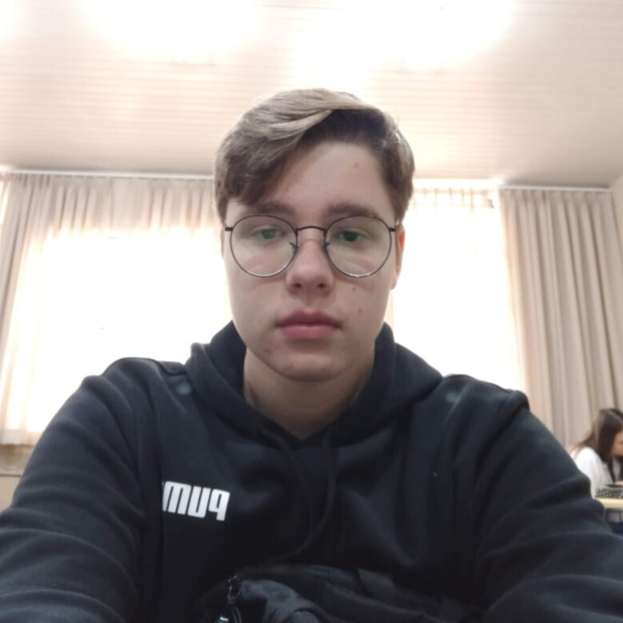
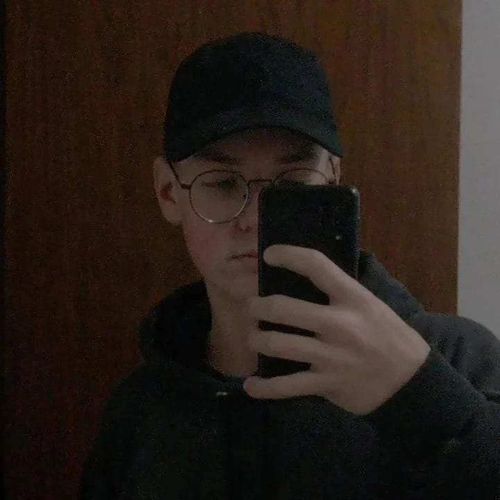

Bem-vindo ao nosso blog de video games, fundado por Lorenzo Cavallin e Vinícius Wirth. Somos entusiastas apaixonados por jogos eletrônicos, explorando desde os mais recentes lançamentos até os clássicos que moldaram a indústria. Com análises imparciais, celebramos a arte e a comunidade dos jogadores, compartilhando histórias inspiradoras de conquistas, explorações e amizades forjadas através dos games. Junte-se a nós nessa jornada pelo vasto e emocionante universo dos video games!


Vinícius Wirth
Lorenzo Cavallin